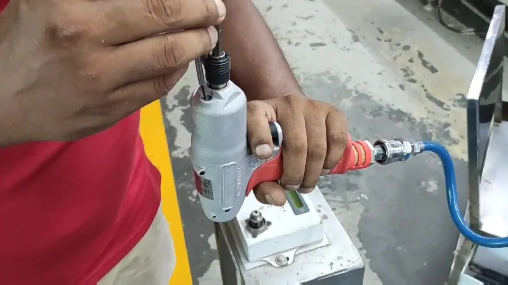
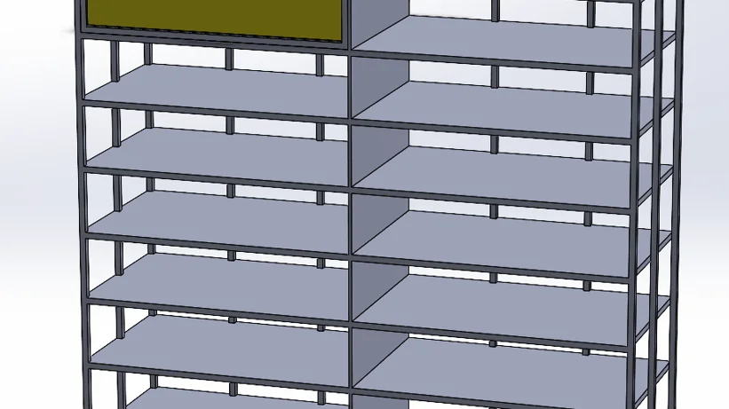
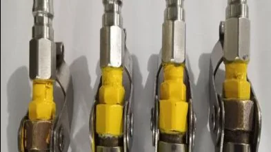

⌁
AGV material handling
Production logistics and repeatable transport between workstations.
INDUSTRIAL AUTOMATION · AGV · MECHATRONICS
I approach mechatronics through industrial sensing, automated material handling, pneumatic process mechanisms and practical production integration—not by claiming robotics publications I do not yet have.

Only this research track
These themes are selected specifically for this specialization.
Production logistics and repeatable transport between workstations.
Workholding, fastening and controlled process movement.
Connecting measured operating conditions to operator-visible decisions.
Evidence-led methods
Identify a work-cell bottleneck
Select sensors, actuators and material-handling logic
Pilot in an operational environment
Document safety, repeatability and next iteration
Selected work
Only the projects that materially support this track are featured.

Industrial case studyParticipated in a material-handling AGV pilot for moving components through a refrigerator production environment.
My involvement: Implementation and production coordination
Evidence: Industrial trial; autonomous-navigation performance metrics are not supplied.

Industrial case studyWorked on process fixtures and pneumatic/assembly-related equipment integration.
My involvement: Process and equipment engineering
Evidence: Factory engineering case; no robotics research paper is claimed.
 Industrial case study
Industrial case study
Supported conveyor modification and line equipment implementation for production movement.
My involvement: Production equipment integration
Evidence: Process implementation case; throughput improvement not independently quantified.
Future research
What sensing and control architecture is robust enough for production-floor AGV trials?
How do automated material-handling routes affect safety, throughput and operator coordination?
I welcome discussions with research groups whose work connects to Robotics, AGV & Mechatronics.
Academic profile and contact ↗